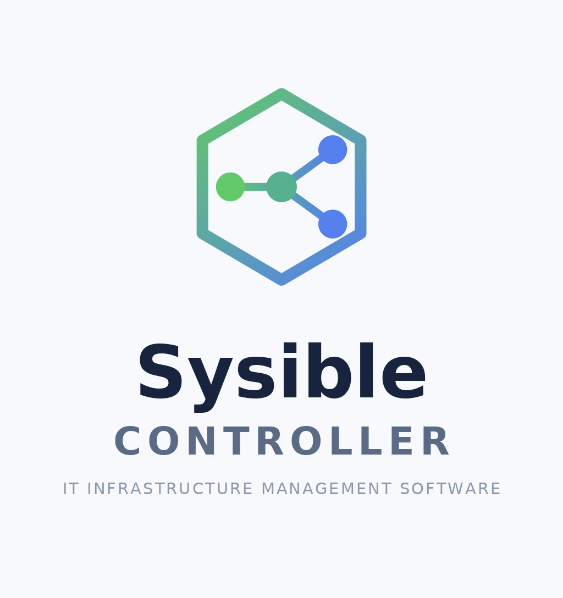

Sysible Controller is the central management console of Sysible Enterprise Software. It is installed on a single Linux machine — the controller — and from there gives a system administrator one place to see, configure, and act on an entire fleet of Linux hosts. The controller is made up of two cooperating pieces: a FastAPI backend service that holds the fleet's inventory, credentials, and task queue in a local SQLite database, and a PySide6 desktop GUI client that the administrator runs to interact with that backend. Both pieces are installed together and run on the same machine by default, with the desktop client talking to the backend over HTTPS exactly as any other client of the API would.
Sysible Controller manages target hosts through two independent mechanisms, and an administrator can mix both across a fleet:
Both mechanisms feed the same fleet-wide views in the GUI — User & Group Administration, Service Management, System Health & Logs, Cron & Systemd Timers, and so on — so an administrator generally does not need to think about which transport a given host uses once it is enrolled.
Beyond the admin-facing GUI, the controller also runs an optional, separate host-facing Webserver Portal as its own process. This is what an end user or host operator — not the Sysible administrator — visits in a browser to self-service: downloading a ready-to-run agent bundle for their machine, or grabbing files the administrator has staged for them, without ever needing admin credentials or shell access to the controller itself.
Security is layered throughout the product:
X-API-Key header.Sysible Controller's installer (install_sysible.sh) supports Debian/Ubuntu, RHEL/CentOS/Fedora, and openSUSE/SLES families of Linux distribution. It detects which one it's running on by checking, in order, for dnf, then yum, then zypper, then apt-get, and installs the equivalent package list for whichever it finds first — it will not run on a system with none of these four available. This is the same detection order Host Software Management (Section 10) uses at runtime against managed hosts, so "which package manager does this machine use" is answered consistently whether the machine in question is the controller itself or a host it manages. The installer must be run as root; it checks this at the very start and exits immediately if it is not.
| Package | Purpose |
|---|---|
python3, python3-pip, python3-venv* , python3-dev / python3-devel* | Python runtime, package manager, virtual environments, and headers for native builds |
gcc, libffi-dev / libffi-devel* | Compiler and FFI headers some Python packages need at install time |
passwd, util-linux | Account/user-management utilities used on managed hosts |
systemd | Runs the backend and every host agent as a service |
procps / procps-ng* | Process-inspection tools (ps and friends) |
curl | Used by the installer and CLI to probe the backend's HTTPS endpoint |
sqlite3 / sqlite* | The controller's local database engine |
rsync | Deploys project files into /opt/sysible |
lsof | Detects and cleans up anything still holding the backend's port |
openssl | Generates the self-signed TLS certificate |
install_sysible.sh for the exact list per family. Two differences are worth calling out: python3-venv is only installed as its own package on Debian/Ubuntu, since Fedora/RHEL and openSUSE/SLES already bundle the venv module into python3 itself; and the -dev / -devel header packages follow each distribution's own naming convention rather than a shared one.Inside its own virtual environment, the controller installs FastAPI and Uvicorn (backend web framework and ASGI server), Pydantic (request/response validation), psutil (system/process metrics), paramiko (SSH client library for SSH-managed hosts), python-multipart (portal upload/login form handling), requests, and PySide6 (the desktop GUI's Qt6 bindings).
The host agent itself has a much smaller footprint — just requests — kept in its own separate requirements file so it can ship inside the downloadable agent bundle and run on a target host with no other Sysible code present.
Installation is a single script, install_sysible.sh, run with root privileges from wherever the project files currently live — it does not need to be run from its final installed location.
# from the folder containing the Sysible Controller project files
sudo ./install_sysible.sh
The script proceeds through the following stages, in order:
Detects the package manager (dnf > yum > zypper > apt-get, in that order) and runs the matching install command for the full package list in Section 2 — dnf/yum install -y, zypper --non-interactive install -y (after a zypper --non-interactive refresh), or apt update followed by apt install -y.
Sysible Controller always runs out of a single fixed location, /opt/sysible, because the CLI tooling hardcodes that path. The installer mirrors the source directory there with rsync -a --delete. A deliberate set of excludes protects live, running state from ever being wiped by a re-install: the virtual environment, the runtime run directory, logs, any *.db file, api_key.txt, hosts.json, the remote_keys directory, agent_state.json, the certs directory, and Python bytecode/cache artifacts. Re-running the installer to push a code update is therefore safe — it will not regenerate secrets, rotate the TLS certificate, or touch the database.
Creates a virtual environment at /opt/sysible/venv, upgrades pip, and installs requirements.txt into it.
chmod +x is applied to sysible_controller.
If /opt/sysible/certs/server.crt and server.key do not already exist, the installer generates a new 2048-bit RSA key pair and a 10-year self-signed certificate. Because there is no public DNS domain to obtain a CA-signed certificate for on a LAN deployment, this self-signed cert is the controller's only option — and it is built to cover every address the controller might be reached at: DNS:localhost, IP:127.0.0.1, the machine's own hostname, and every IP address hostname -I reports, each added as its own Subject Alternative Name. This matters because Controller Configuration's "All Detected IPs (failover)" mode can hand an agent bundle any one of the controller's network interfaces, and the certificate has to cover all of them for that to verify correctly.
Every admin/GUI-facing endpoint requires this key. The installer pre-generates it so the file exists with correct permissions before the service is first started; the backend will also auto-generate it on first run if it's somehow missing.
Writes /etc/systemd/system/sysible-backend.service, running uvicorn backend.app:app out of /opt/sysible, bound to 0.0.0.0:9000, using the certificate just generated, restarting automatically on failure. The service is enabled (starts on boot) but deliberately not started by the installer — that happens via sysible_controller start afterward.
Copies sysible_controller to /usr/local/bin/sysible_controller, chmod +x'd and on the system PATH.
On a machine with a desktop environment, adds a Sysible Controller entry to the system's application menu, using the same logo shown throughout the GUI. Clicking it prompts graphically for the admin/root password (via pkexec) and runs sysible_controller gui — the same one-click way back into the dashboard described in Section 5, with no terminal required. This step only runs if both pkexec and /usr/share/applications are present, so it's a silent no-op on a headless server with no desktop at all.
/opt/sysible/api_key.txt, mode 600, root-only) and where the TLS certificate is (/opt/sysible/certs/server.crt). Copy that certificate file — never the .key file — to any machine that will run the GUI client (if not this same machine) and to every host that will run the agent, pointing each at it via SYSIBLE_CA_CERT so they can verify the controller instead of blindly trusting it. The very last line of installer output is the next step:Run: sudo sysible_controller start
Before the Dashboard or any of its tools become accessible, Sysible Controller requires every user to authenticate as an administrator. The desktop application checks the controller each time it starts and shows one of two screens — first-run account creation, or the normal login — before the Dashboard appears.
A brand-new installation ships with no administrator account and no default password. The first time the desktop application starts, it detects that no administrator exists yet and presents a Create Administrator Account screen instead of a login. Choose a Username and a Password (entered twice to confirm), click Create Account, and the account is created and you are logged straight into the Dashboard. There is no admin/admin default to log in with, and no separate "now change your password" step afterward — you pick your own password up front. The password must satisfy the Administrator Password Policy in effect (see Section 9). This screen only appears while no administrator exists; once the first account is created it never appears again.
Every launch after the first shows the normal Administrator Login screen, which displays the Sysible logo and asks for the Username and Password of an existing administrator. If credentials are incorrect, an error message indicates an invalid username or password and the password field is cleared. If the backend cannot be reached at all, a different error reports that connection problem instead.
When one administrator adds another from Sysible Controller Settings, the new account is created with a temporary password and flagged to change it. The first time someone logs in on such an account, a Change Your Password dialog appears automatically and cannot be dismissed — by design, an administrator cannot continue into the Dashboard while still using a temporary password set by someone else. The new password must satisfy the Administrator Password Policy currently configured (see Section 9). Once set, future logins on that account use the new password directly, unless a fellow administrator later resets it back to a temporary one, in which case the same flow runs again. The first-run account you create for yourself is never subject to this, since you chose its password from the start.
sysible_controller is the single command-line entry point for operating the controller once installed. It wraps systemctl for the backend's systemd service (sysible-backend) and separately manages the desktop GUI client as an ordinary background process — the GUI is one administrator's desktop application, not a daemon, so it is deliberately not made into a systemd service itself.
sysible_controller {start|stop|restart|status|logs|gui|destroy}
| Command | Root? | What it does |
|---|---|---|
start | Yes | Starts sysible-backend, then polls https://127.0.0.1:9000/ until the API is actually reachable (not just "systemd says active") and confirms /openapi.json advertises current routes. Refuses to proceed if the TLS certificate is missing. Then launches the desktop GUI as a background process. |
stop | Yes | Stops the GUI process (if tracked), stops sysible-backend, kills any leftover Webserver Portal subprocess, and as a last resort uses lsof to kill anything still bound to port 9000. |
restart | Yes | Exactly stop followed by start. |
status | No | Prints systemctl status sysible-backend plus whether a GUI process is currently running (and its PID). |
logs | No | Runs journalctl -u sysible-backend -f to tail the backend's live log stream. |
gui | Yes | Starts only the desktop GUI, without touching the backend. Use this to reopen the dashboard after it's been closed. |
destroy | Yes | Irreversible uninstaller — see warning below. |
sysible_controller gui is the command-line equivalent, useful if the tray icon was dismissed or the GUI process was killed outright — and on a machine with a desktop environment, the Sysible Controller application menu launcher installed in Section 3, Step 9 does the same thing with a click instead of a terminal, prompting graphically for the admin/root password it needs.destroy to confirm — anything else aborts with no changes made. Once confirmed it: stops everything, disables and deletes the sysible-backend systemd unit, takes a timestamped backup of the SQLite database to /tmp/sysible-backup-<timestamp>.db (left behind for you to delete once no longer needed), deletes the entire /opt/sysible directory — database, TLS certificate/key, and admin API key all gone — and removes its own /usr/local/bin/sysible_controller binary. destroy never reaches out to already-enrolled hosts: their agent services keep running locally and will simply start failing to reach a controller that no longer exists. Disenroll hosts first (Section 7), or run disenroll_agent.sh on each one, if you want them cleaned up too.After logging in, you land on the main Dashboard — the home screen for the whole application. It is a single window with the Sysible logo and product name at the top, a search bar, and a grid of five clickable tiles below it. Each tile opens that tool in its own window ("popout"), which can be left open alongside the Dashboard and other tool windows — closing a tool window does not close the Dashboard or any other open tool.
Typing into the search bar at the top of the Dashboard matches against a curated list of common tasks — things like create a user, add a repository, restart a service, or reset password — and lists the matching task(s) below it as you type. Pressing Return, or clicking a result, opens the right tile directly; for tasks that live under System Administration's sub-tiles, it opens straight through to that sub-tile, and for User & Group Administration tasks it lands on the specific tab (Create User, Account, Password, Groups, or Reports) rather than leaving you to find it. This saves having to already know which of the Dashboard's tiles — or, for anything under System Administration, which of its twelve sub-tiles — a given task lives under.
A small pill-shaped switch in the top-right of the Dashboard header toggles the entire interface between a dark theme (the default) and a light theme. Clicking the sun or moon re-skins every window already on screen — the Dashboard and any open tool popouts — immediately, with no restart, and the choice is remembered the next time you launch the GUI. The toggle deliberately uses plain sun/moon glyphs rather than an icon font, so it always stays usable as the way back out of light mode even if the icon font is unavailable.
| Tile | What it's for |
|---|---|
| Sysible Controller Host Enrollment | Bring new hosts under management using the lightweight agent; view and manage hosts already enrolled. |
| Sysible Controller Settings | Configure the controller itself: the address/port baked into agent bundles, administrator accounts, their password policy, the audit log, and the License & Version section. |
| Sysible Connect | Unified console for direct, hands-on work on individual hosts — live terminal, one-off commands, file transfer, and one-click SSH enrollment. |
| Webserver Portal Configuration | Start/stop the optional host-facing portal, set its credentials and port, and manage the shared file pool. |
| System Administration | Sub-menu of twelve fleet-wide operational tools — user/group accounts, health checks, services, environmental policies, scheduled tasks, package management, repositories, networking, the filesystem layer, block storage, the firewall, and host security/hardening. |
The Host Enrollment page is where hosts are brought under management using the Sysible agent, and where the resulting fleet of enrolled hosts is organized and maintained. It is reached from the "Sysible Controller Host Enrollment" tile on the Dashboard.
Clicking Download Agent Bundle prompts you to choose where to save sysible-agent-bundle.zip — the same ready-to-run bundle the Webserver Portal hands to end users, built here on demand. Each download bakes in a fresh, one-time enrollment token plus the controller's configured address and port. The zip contains:
agent.py — the Sysible host agent program itselfrequirements.txt — the Python packages the agent needs (installed automatically)sysible_agent.env — the controller's address and this download's one-time enrollment tokenserver.crt (when applicable) — the controller's TLS certificate, so the agent can verify it's talking to the real controllerrun_agent.sh — the installer script (run as root on the target host)disenroll_agent.sh — a companion script that cleanly removes the agent from that hostTo enroll a host: copy the unzipped bundle onto the target machine, make run_agent.sh executable, and run it as root:
# on the target host
chmod +x run_agent.sh
sudo ./run_agent.sh
The agent installs and starts as a background systemd service that restarts itself on crash or reboot. The host then appears in the Enrolled Hosts list (allow a few moments for the first heartbeat).
Hosts can be organized into environments — labels such as "Production," "Staging," or "Development." Environments are entirely optional; an unassigned host is listed under an "Unassigned" heading. Select a host, use the Environment dropdown (choose "+ New environment..." to create one on the fly), and click Set Environment to apply it. The same environment list is shared elsewhere in the application, including Sysible Connect's SSH-enrollment flow.
The Enrolled Hosts list groups hosts under collapsible environment headers, with Collapse All / Expand All buttons for tidying a large fleet. Selecting a host populates a details panel with its Hostname, Host ID, Platform, Kernel, Status, and Environment. Refresh reloads the list and details from the controller.
Select a host and click Disenroll Host. If the host is online, Sysible first asks it to stop and remove its own systemd service. If it doesn't respond in time (typically because it's offline), the enrollment is removed from the controller's records regardless, but the agent software remains on that machine until someone runs disenroll_agent.sh on it directly.
| What disenrolling does | What it doesn't do |
|---|---|
| Stops and removes the agent's systemd service; removes the host's enrollment record so it disappears from Host Enrollment and Sysible Connect. | Leaves the installed agent files, pinned certificate, and local state directory on disk when torn down remotely — for full cleanup, run disenroll_agent.sh from the original bundle directly on the host. |
Sysible Connect is the hands-on console for working directly on individual managed hosts — whether enrolled via the Sysible agent or connected directly over SSH. It is reached from the "Sysible Connect" tile on the Dashboard.
The Managed Hosts list runs down the left of the page and shows every host the controller knows about — agent-enrolled and SSH-connected alike — grouped by environment, with each host's connection type and IP address shown inline. A host enrolled both ways appears once, as a combined Agent + SSH entry, rather than twice. Buttons let you Refresh, Remove Host, and Show Sysible Controller Public Key (for installing the controller's key manually where the one-click flow isn't suitable).
Removing a connection from a combined host is granular: when you remove an Agent + SSH host you're asked whether to drop just the SSH connection, just the agent connection, or both — so you can, for example, revoke a host's SSH access while leaving its agent enrollment intact.
The SSH to a New Host section connects a host that isn't enrolled by any method yet — no token, no pre-installed software. Provide Host name, IP address, Username (defaults to root), SSH password, and optionally an Environment. Clicking Connect Host does the entire handoff in one step: the controller uses the password once to install its own auto-generated SSH key on the target, then discards the password — all future connections use that key, no password required again.
Double-click a host to open its terminal in its own window. The terminal is a pop-out (not docked in the page), so you can place it wherever you like, resize it freely, and keep several open side by side. You can open more than one session to the same host at once — each double-click opens a new, independent session, and repeated windows for the same host are numbered in their title bars.
For a host that's enrolled both ways, a Connection picker at the top of the window switches between the SSH session and the Agent console; single-transport hosts show only what they have.
On an SSH connection the terminal is a genuine PTY-backed interactive session. Full-screen, cursor-addressed programs — vim, top, htop, less — render correctly rather than spilling stray redraw lines, and the terminal resizes with the window so those programs use the whole panel. Output is colorized (ANSI colors are honored), and the user@host portion of the prompt is shown in green, turning red whenever you are root (including after su or sudo -i) as an at-a-glance privilege cue. Arrow keys, Tab, and Backspace all work, and pasting sends text straight into the session. Buttons provide Send Ctrl+C (a real interrupt signal), Clear (clears the pane and redraws the prompt), and Exit Session (closes the window and tears down the remote session).
Each terminal window also has a toolbar with Upload… and Download… (transfer a file to or from that host over SSH), Find… (search the terminal output), Save Output… (write the terminal's text to a file), and A- / A+ font-size controls (the remote pty is re-sized to match so full-screen apps still fill the panel).
On an Agent connection there's no persistent shell, so true interactive sessions aren't possible. Instead, type a command in the bottom box and press Enter — it's queued for the agent to execute, with output, errors, and exit code returned once it reports back (typically a few seconds; a timeout is reported after about 30 seconds of silence). Command history is recalled with the Up/Down arrow keys.
The File Transfer section moves files to and from a managed host. SSH hosts transfer over SFTP with no enforced size limit, completing synchronously. Agent-enrolled hosts transfer through the same queued-task channel used for commands, capped at a modest size (the page states the current limit) since that channel isn't designed for bulk data movement.
This page consolidates everything related to configuring and securing the controller installation itself, as distinct from the hosts it manages. It is reached from the "Sysible Controller Settings" tile and is organized into five sections on one scrollable page.
Controls the network address baked into every agent bundle — where enrolled agents are told to connect. Set a Hostname, an IP Address, or both; a Detect Local IPs button populates real candidates. The "Use for agent bundles" dropdown decides what's actually used:
| Mode | Behavior |
|---|---|
| Hostname | Bundles connect using the configured hostname. |
| IP Address | Bundles connect using the configured IP address. |
| All Detected IPs (failover) | Every detected address is baked in; the agent tries each in turn until one connects — useful when the controller is reachable over more than one network path. |
Manages who can log into the Dashboard — separate from any accounts on managed hosts. Shows Username, Created By, Last Login, and Must Change Password for each account. Add Administrator creates a new account with a temporary password (forced to change on first login). Remove Selected Administrator deletes one. "Change My Own Credentials" lets the logged-in administrator update their own username/password, authorized by entering the current password.
Defines complexity rules for Dashboard administrator passwords specifically — minimum length, and toggles for requiring uppercase, lowercase, a digit, and a symbol. Enforced on new administrator accounts, self-service credential changes, and the forced first-login change. Existing passwords predating a policy change are not retroactively invalidated. This governs Dashboard logins only — operating-system accounts on managed hosts are governed separately by Environmental Policies (Section 10).
An append-only history of login attempts (successful and failed) and administrator account changes (additions, removals, credential changes) — Time, Event, Username, and Detail for each entry. Refresh Audit Log brings it current. This does not cover general fleet command/activity history, which lives under System Administration's health, log, and service tools.
A short reference section, folded into this page rather than kept as its own dashboard tile. It shows the installed version as v2.0.0 at the time of writing, read from a single project-root version.py file that both the GUI and backend import — so this number is always accurate, never a hardcoded label that could drift out of sync with the actual install. A License Key field lets an administrator type in and save a license key; Save License Key persists it. Licensing is not yet enforced against this build — there's no entitlement check tied to the key today — so this is simply somewhere to record one ahead of a licensing model being introduced.
The System Administration menu is the hub for day-to-day fleet management. Rather than one sprawling window, it opens a compact launcher with eighteen tiles, each opening its own dedicated window: User & Group Administration, System Health & Logs, Service Management, Environmental Policies, Cron & Systemd Timers, Host Software Management, Repository Management, Network Management, File System Management, Storage Administration, Firewall Administration, Security Administration, Backup & Recovery, System Boot & Recovery, Time Synchronization, Certificate Management, Containers & VMs, and Run A Script Across All Hosts.
The most detailed of the five tools — accounts, passwords, sudo rights, group memberships, and account metadata across the fleet.
Before showing anything useful, the tool needs a live snapshot of each host's actual users, groups, and sessions. Check one or more hosts and click Sync Checked Hosts; SSH hosts respond immediately, agent hosts are polled until they report back. Clicking a host makes it "active," and every account-changing action automatically triggers a quiet re-sync of the affected host shortly after it completes.
| Tab | Covers |
|---|---|
| Create User | Username, optional Password (with Generate), Shell (default /bin/bash). Creates the account on every checked host. |
| Account | Account Status (ACTIVE/LOCKED, or MIXED across checked hosts with a per-host breakdown popup); shell & GECOS edit; sudo status; groups; active sessions; Lock / Unlock / Toggle Sudo / Kill Sessions / Delete User (checked hosts); a separately styled Terminate User button that ignores the checklist and removes the account from every host in the fleet, with an explicit confirmation listing every affected host. |
| Password | Set Password (validated against the active policy) with a Generate button and a copy-to-clipboard popup; Force Reset Next Login; Password Aging (Max/Min/Warn days); Account Expiration (30/60/90/180 days, Never, or a custom date). |
| Groups | Add/remove the selected user from a group; create or delete groups. |
| Reports | Audit Privileged Users (who has sudo, fleet-wide); View All Groups & Members. |
A diagnostics tool: read-only checks across checked hosts, plus process-management actions for intervening when something is misbehaving.
| Check / Action | What it reports |
|---|---|
| Check Host Health | The flagship combined verdict — see below. |
| Disk Usage | df-style report with filesystem type included. |
| Memory & CPU Snapshot | Memory % with an OK/WARNING/CRITICAL judgment, full memory table, load average, top CPU consumers. |
| Uptime | Uptime and load average. |
| Failed Services | Systemd units in a failed state, or an explicit "No failed services." |
| Find Large Files | Top N largest files under a given path, largest first, in MB. |
| Search / Tail Logs | Pattern search or a plain tail of the last N lines. |
| View Processes (CPU / Memory) | Top processes sorted by each resource. |
| Investigate High Load | Load average plus process detail aimed at explaining elevated load. |
| Zombie Processes | Any defunct processes, or a clean-host message. |
| Kill / Set Priority / Restart Process | Acts on a Target PID — kill with a chosen signal, renice (-20 to 19), or capture-and-relaunch the same command line (Linux only). |
Disk-usage scoring deliberately excludes removable and install media — squashfs, iso9660, udf, overlay filesystem types, and mount points under /media, /run/media, /cdrom, or /snap — before checking against thresholds. These mounts are typically read-only and expected to report 100% full permanently (an installer ISO, or the squashfs images snapd mounts per package), so without this exclusion an otherwise healthy host could be wrongly flagged CRITICAL. Excluded mounts are still listed for transparency, and the unfiltered raw output always follows further down.
| Signal | WARNING | CRITICAL |
|---|---|---|
| Disk usage (excluding removable/install media) | ≥ 75% | ≥ 90% |
| Failed systemd units | 1–2 | 3+ |
| Load ratio (1-min load ÷ CPU cores) | ≥ 1.0 | ≥ 2.0 |
The worst of the three becomes the overall verdict. Raw, hard-to-skim output (a df table, free -h, a failed-units listing) is rewritten into plain sentences wherever the tool recognizes the exact shape of that output — for example, a disk row becomes "/var: 87% used (12G of 14G total, 2G available; ext4)" — and left completely untouched otherwise, rather than risk a wrong guess.
A second block of actions below the process-management row, aimed at digging into a specific problem rather than a fleet-wide snapshot. A shared Lines field (default 200) controls how much of each log most of these pull back.
| Action | What it does |
|---|---|
| Review System Logs | Leads with a count of this boot's error- and warning-level journal lines, then shows the most recent N lines — a quicker skim than Search/Tail Logs for catching a problem at a glance. |
| Analyze Journal Logs | Scopes to the current boot only, with an optional priority floor (e.g. "warning" = warning and anything more severe) to narrow it to entries actually worth investigating. |
| Monitor Kernel Messages | The kernel ring buffer with human-readable timestamps (dmesg -T), falling back to the journal's kernel-tagged entries if dmesg needs privileges this user doesn't have. |
| Review Audit Logs | Prefers ausearch (goes through the audit dispatcher) and falls back to reading /var/log/audit/audit.log directly if ausearch isn't present. |
| Trace Application Errors | Greps for error/exception/stack-trace vocabulary, scoped to one service's journal when a Service/unit is entered (optional), or the whole journal otherwise. |
| Investigate Boot Failures | Recent boots from journalctl --list-boots (so an unclean shutdown is visible at a glance), how long the most recent boot took, and any currently-failed unit. |
| Investigate Crashes | Three crash signals in one pass: kernel oops/panic/segfault lines, OOM-killer events, and systemd-coredump's record of core dumps. |
| Troubleshoot Memory Issues | The same computed memory usage-percent verdict as Memory & CPU Snapshot, plus the top memory consumers, a swap-activity sample, and any OOM-killer history. |
| Analyze CPU Bottlenecks | The same load/core-ratio scoring as Investigate High Load, plus per-core utilization (where mpstat is available), run-queue/context-switch/interrupt counters from vmstat, and the top CPU consumers. |
| Collect Support Information | A quick, read-only snapshot to paste into a ticket without waiting on a full sos report — identity/OS/kernel, uptime and load, memory and disk, network basics, and failed services. |
| Generate sos Report | Runs the distro's sos/sosreport tool in unattended batch mode and reports where it wrote the finished archive. Deliberately does not install the tool if it's missing — install sos (RHEL/Fedora/openSUSE) or sosreport (Debian/Ubuntu) first. |
Each (host, report) pair gets its own closable tab in the Reports area below, same as every other System Health & Logs check — Clear All Reports closes them all at once.
Controls, inspects, and creates systemd services across the fleet. List Installed Services populates a searchable list; clicking an entry fills the Service name field. With a name in place: Start / Stop / Restart / Reload, Enable At Boot / Disable At Boot, Check Status, View Logs, Troubleshoot This Service, Troubleshoot All Failed Services, and View Dependencies.
A collapsible Create / Configure Service panel (collapsed by default) lets you define a new systemd unit — name, description, ExecStart command, working directory, run-as user (default root), restart policy (default on-failure), and After-ordering (default network.target) — with an "enable + start immediately" checkbox checked by default. Configure Dependencies adds After=/Requires=/Wants= relationships via a non-destructive systemd override drop-in, rather than editing the original unit file.
Defines the baseline password, lockout, sudo, and umask policy for operating-system accounts on managed hosts — distinct from the Administrator Password Policy, which governs only logins to the Sysible Controller GUI itself.
| Group | Settings |
|---|---|
| Password | Minimum length, retry attempts, and require-uppercase / lowercase / digit / symbol checkboxes. |
| Lockout | Failed attempts before auto-lock; unlock time in seconds (0 = manual unlock only). |
| Sudo | Sudo session timeout in minutes; whether sudo requires a password. |
| Umask | Default umask in octal (e.g. 027). |
Save Policy Defaults persists the baseline — and takes effect immediately, with no host interaction, for one purpose: User & Group Administration's password Generate/Set/Create actions read this same saved policy everywhere in the application. Push Selected Policies to Checked Hosts writes the chosen categories into each host's real configuration: Password Quality into its pwquality.conf-style file, Lockout into faillock.conf-style config, Sudo into a sudoers.d drop-in, and Umask into its login.defs-style default.
Manages two parallel scheduling mechanisms, both against the same merged host checklist.
Cron Jobs operates on the connecting account's own crontab; List Cron Jobs also includes /etc/crontab and /etc/cron.d so system-wide jobs are visible too. Add a job with the schedule builder (below), a command, and an optional comment; remove one by pasting the exact line, snippet, or comment to match.
Systemd Timers mirror ordinary service lifecycle controls (Start, Stop, Enable/Disable At Boot, Check Status) plus Delete Timer, which by default also deletes the paired oneshot service the timer triggers (a checkbox controls this). A collapsible Create Systemd Timer panel defines a name, description, ExecStart command, a calendar schedule and/or OnBootSec/OnUnitActiveSec triggers, a run-as user, and the same "enable + start immediately" default.
Both cron and timer schedules use the same human-readable schedule builder — plain-English frequency/time choices translated into the correct cron or OnCalendar syntax behind the scenes, with an advanced option to type the raw expression directly.
Installs, removes, updates, and inspects packages across the fleet — working unmodified against RHEL/CentOS/Fedora (dnf, falling back to yum), openSUSE/SLES (zypper), and Debian/Ubuntu (apt) hosts. Every command this tool sends detects the target host's package manager fresh, at the moment it runs, rather than assuming or caching one — so a single action against a checklist of mixed-distro hosts is dispatched correctly to each one without any extra setup. If you don't know a package's exact name, Search Available queries the host's repositories so you can find it (for example, typing http turns up httpd / apache2) and install it without leaving the page.
| Action | What it does |
|---|---|
| Detect Package Manager / OS | Reports the host's OS name plus which package manager was detected (dnf, yum, zypper, or apt-get) — the literal answer to "which package manager and environment is this host running." |
| Search Available | Searches the host's configured repositories for available (not just installed) packages whose name or summary matches the term in the Package name(s) field — dnf/yum search, zypper search, or apt-cache search, normalized to one "name — summary" line per match. Results fill the list below; clicking one drops its package name into the field, ready to Install. This is how you discover what to install when you only know roughly what you're after. |
| List Installed | Every installed package name, sourced from rpm -qa or dpkg-query depending on the host. Filterable; clicking an entry fills the Package name(s) field. |
| Install | Installs one or more space-separated package names (dnf/yum/zypper install -y, or apt-get install -y). |
| Remove | Removes one or more space-separated package names from the host. |
| Update / Upgrade | With package names entered, updates just those; left blank, upgrades every package on the host — covering both RHEL's "Update packages" and Debian's "Upgrade systems" as one action. |
| Query Package Info | Metadata for a single named package (version, source repository, summary, install state). |
| Verify Package Integrity | Checks a single named package's installed files against what it should look like — rpm -V on dnf/yum/zypper hosts (all three are RPM-based underneath), debsums on apt hosts. |
| Clean Package Cache | Clears downloaded package metadata/cache (dnf/yum clean all, zypper clean, or apt-get clean), reclaiming disk space. |
Configures where packages come from — separate from Host Software Management on purpose, since adding or toggling a repository source is a distinct, less frequent action from installing or removing the packages that come from it.
| Action | What it does |
|---|---|
| List Repositories | Every configured repository on the host, enabled or not, with its source. |
| Add Repository | Adds a repository from a URL (RHEL/SUSE) or a full source line (Debian/Ubuntu, e.g. deb https://example.com/ubuntu focal main). On dnf/yum this calls the native config-manager --add-repo, which assigns its own repository ID — run List Repositories afterward to see it. On zypper and apt, the Alias / Repository ID field is required and becomes that repository's identifier for every action below. Runs against whichever hosts are checked in Target Hosts. |
| Add Repository to All Hosts | Same validation and command as Add Repository, but after a confirmation prompt it targets every enrolled host (agent + SSH) regardless of which boxes are checked, and checks them all to match. The one-click way to roll a repository out fleet-wide once it's been proven out on one host. |
| Enable Repository | Re-enables a previously disabled repository by its Alias / Repository ID. |
| Disable Repository | Disables a repository without removing its configuration, by Alias / Repository ID. |
| Remove Repository | Deletes a repository's configuration entirely, by Alias / Repository ID. |
zypper and Debian/Ubuntu, and required for Enable / Disable / Remove on every platform. Letters, numbers, dots, dashes, and underscores only.Diagnoses connectivity and DNS, inspects ports, captures packets, and configures IP/DHCP/DNS/gateway/routing/hostname/bonding/teaming/VLANs/bridges/MTU — across the same merged agent + SSH host list as every other System Administration tool. The read-only diagnostics (ping, traceroute, DNS lookups, port/socket inspection, packet capture) are built on standard tools every supported distro ships or can detect as missing. Everything that actually changes a host's network configuration is standardized on nmcli (NetworkManager's CLI); a host that isn't running NetworkManager gets a clear error instead of a silent no-op when a configuration action is run against it, while the read-only diagnostics still work everywhere regardless.
| Action | What it does |
|---|---|
| Ping | ICMP reachability test against a target host. |
| Traceroute | Hop-by-hop route to a target host. |
| Test DNS Resolution | Resolves a hostname against the host's configured DNS. |
| Monitor Ports (all active sockets) | Lists every listening and active socket on the host. |
| Check Listening Services | Lists which services are listening on which ports. |
| Capture Packets (tcpdump) | Runs a short, scoped tcpdump capture and returns the output. |
| Action | What it does |
|---|---|
| Show Connections | Lists nmcli connection profiles and their state. |
| Show Device Status | Lists network devices and their connection state. |
| Show IP Configuration | IP addresses, routes, and DNS for each interface. |
| Apply Static IP | Sets a static IP/prefix/gateway on a chosen interface. |
| Switch to DHCP | Reverts a chosen interface to DHCP addressing. |
| Apply MTU | Sets the MTU on a chosen interface. |
| Action | What it does |
|---|---|
| Apply DNS Settings | Sets DNS servers (and an optional search domain) on a chosen connection. |
| Show Current Hostname | Reports the host's configured hostname. |
| Set Hostname | Sets the host's static hostname. |
| Action | What it does |
|---|---|
| Apply Gateway | Sets the default gateway on a chosen connection. |
| Show Routing Table | Lists the host's current routing table. |
| Add Static Route | Adds a static route (destination network and gateway) to a chosen connection. |
| Action | What it does |
|---|---|
| Create Bond | Creates a bonded interface from two or more member interfaces. |
| Create Team | Creates a teamed interface from two or more member interfaces. |
| Create VLAN | Creates a VLAN-tagged interface on a parent device. |
| Create Bridge | Creates a bridge interface from one or more member interfaces. |
Covers directory and file operations, ownership/permissions/ACLs and links, mount/unmount/resize/repair, /etc/fstab and quotas, and archive/compress — across the merged host list. File- and directory-level actions (create/remove, copy/move/rename, ownership/permissions/ACLs, links, archive/compress) are universal coreutils/tar/gzip-family commands with no filesystem-type assumption. Mount/resize/repair are filesystem-type-aware (ext2/3/4, xfs, btrfs) and auto-detect which tool to call. Check Disk Usage and Find Large Files intentionally reuse the same command builders as System Health & Logs rather than duplicating them.
| Action | What it does |
|---|---|
| Create Directory | Creates a directory at a given path, including any missing parents. |
| Remove Directory | Removes a directory at a given path. |
| Copy | Copies a file or directory to a destination path. |
| Move | Moves a file or directory to a destination path. |
| Rename | Renames a file or directory in place. |
| Action | What it does |
|---|---|
| Change Ownership | Sets the user and/or group owner of a path. |
| Change Permissions | Sets the permission mode of a path. |
| Set ACL | Applies an access control list entry to a path. |
| Show ACL | Lists the access control list entries on a path. |
| Create Symbolic Link | Creates a symlink pointing at a target path. |
| Create Hard Link | Creates a hard link to a target path. |
| Action | What it does |
|---|---|
| Mount | Mounts a device or filesystem at a given mount point. |
| Unmount | Unmounts a given mount point or device. |
| Mount NFS | Mounts an NFS export (server:/export) at a mount point, optionally persisting it to /etc/fstab. Needs the NFS client (nfs-common / nfs-utils) on the host. |
| Mount CIFS | Mounts a CIFS/SMB share (//server/share) at a mount point with optional username/password, optionally persisting to /etc/fstab. Credentials are written to a root-only file, never the command line. Needs cifs-utils on the host. |
| Resize Filesystem | Grows or shrinks a filesystem to match its underlying device/partition, auto-detecting ext2/3/4, xfs, or btrfs. |
| Repair Filesystem | Runs the filesystem-appropriate check/repair tool against an unmounted device. |
| Check Disk Usage | The same df-style report as System Health & Logs' Disk Usage. |
| Find Large Files | The same top-N-largest-files report as System Health & Logs' Find Large Files. |
| Action | What it does |
|---|---|
| Show /etc/fstab | Displays the host's current /etc/fstab. |
| Add fstab Entry | Appends a new mount entry to /etc/fstab. |
| Remove fstab Entry | Removes a matching entry from /etc/fstab. |
| Enable Quotas | Turns on user/group disk quotas for a given filesystem. |
| Show Quotas | Reports current quota usage. |
| Set User Quota | Sets a soft/hard block quota for a given user. |
| Action | What it does |
|---|---|
| Create Archive | Builds a tar archive from a given path. |
| Extract Archive | Extracts a tar archive to a given destination. |
| Compress | Compresses a file. |
| Decompress | Decompresses a previously compressed file. |
Everything below the filesystem layer that File System Management doesn't cover: partitions, raw mkfs formatting, LVM (physical volumes, volume groups, logical volumes), software RAID, swap, and whole-disk health/add/remove — across the merged host list.
| Action | What it does |
|---|---|
| List Disks | Lists block devices and their size/type. |
| Monitor Disk Health | Reports per-disk health indicators. |
| Check SMART Status | Runs a SMART self-check/report against a chosen disk. |
| Rescan / Detect New Disk | Asks the storage layer to rescan for newly attached disks. |
| Remove Disk | Logically removes a disk from the kernel's view ahead of physical removal. |
| Action | What it does |
|---|---|
| List Partitions | Lists partitions on a chosen disk. |
| Create Partition Table | Initializes a new partition table (e.g. GPT or MBR) on a disk. |
| Create Partition | Creates a new partition on a disk. |
| Delete Partition | Deletes a partition from a disk. |
| Resize Partition | Resizes an existing partition. |
| Action | What it does |
|---|---|
| Format Filesystem | Runs mkfs for a chosen filesystem type against a device or partition. |
| Action | What it does |
|---|---|
| Create / List Physical Volumes | Initializes a device as an LVM physical volume, or lists existing ones. |
| Create / List Volume Groups | Creates a volume group from one or more physical volumes, or lists existing ones. |
| Extend / Reduce Volume Group | Adds a physical volume to a volume group, or removes one from it. |
| Create / List Logical Volumes | Creates a logical volume within a volume group, or lists existing ones. |
| Extend / Reduce Logical Volume | Grows or shrinks a logical volume. |
| Action | What it does |
|---|---|
| List RAID Arrays | Lists software RAID arrays. |
| RAID Status | Reports detailed status of a chosen array, including sync/rebuild progress. |
| Create RAID Array | Creates a new software RAID array from member devices. |
| Replace Failed Disk | Marks a failed member as removed and adds its replacement to the array. |
| Action | What it does |
|---|---|
| List Swap | Lists active swap devices/files. |
| Create Swap File | Creates and activates a swap file of a given size. |
| Create Swap Partition | Formats and activates an existing partition as swap. |
| Disable Swap | Deactivates a swap device or file. |
Covers firewalld (service state, default zone, ports, zones, rich rules) plus the two lower-level backends it normally sits on top of, nftables and iptables — across the merged host list, so a host can be managed at whichever layer is appropriate for it.
| Action | What it does |
|---|---|
| Status | Reports whether firewalld is running and its current configuration summary. |
| Enable & Start | Enables firewalld at boot and starts it now. |
| Disable & Stop | Stops firewalld and disables it at boot. |
| Reload | Reloads firewalld's configuration without dropping active connections. |
| Set Default Zone | Sets the zone new connections are assigned to by default. |
| Action | What it does |
|---|---|
| List Ports (and Zone Details) | Lists open ports per zone. |
| Open Port | Opens a port/protocol in a chosen zone. |
| Close Port | Closes a previously opened port/protocol in a chosen zone. |
| Action | What it does |
|---|---|
| List Zones | Lists configured firewalld zones. |
| Create Zone | Creates a new zone. |
| Delete Zone | Deletes an existing zone. |
| Action | What it does |
|---|---|
| List Rich Rules | Lists rich rules configured in a zone. |
| Add Rich Rule | Adds a rich rule to a zone. |
| Remove Rich Rule | Removes a matching rich rule from a zone. |
| Action | What it does |
|---|---|
| List Ruleset | Lists the active nftables ruleset. |
| Flush Ruleset | Clears the active nftables ruleset. |
| Add Table | Adds an nftables table. |
| Add Chain | Adds a chain to a table. |
| Add Rule | Adds a rule to a chain. |
| Delete Rule | Deletes a rule by handle. |
| Action | What it does |
|---|---|
| List Rules | Lists the active iptables rule set. |
| Persist Rules (Save) | Saves the current rule set so it survives a reboot. |
| Add Rule | Appends a new iptables rule. |
| Delete Rule | Deletes a matching iptables rule. |
| Flush | Clears rules from a chain/table. |
Covers SELinux (mode and booleans, denial troubleshooting, file contexts, policy modules), SSH hardening (sshd options, root login, key-based auth, key rotation), audit logs and failed-login review, security updates and password policy, and baseline system hardening plus vulnerability scans — across the merged host list.
| Action | What it does |
|---|---|
| Status | Reports SELinux's current mode and policy. |
| Set Runtime Mode | Switches between Enforcing and Permissive until the next reboot. |
| Set Persistent Mode | Writes the chosen mode into the SELinux config so it survives a reboot. |
| List / Set Booleans | Lists SELinux booleans and their state, or turns a named boolean on or off. |
| Recent / Explain / Journal Denials | Lists recent SELinux denials, runs one through a plain-language explainer, or pulls denials from the systemd journal. |
| Get / Restore Context | Reports the SELinux context of a path, or restores it to its policy default. |
| List / Add / Remove File Context Rules | Lists, adds, or removes file context rules. |
| Generate Policy From Denials | Drafts a custom policy module from recent denials. |
| Action | What it does |
|---|---|
| Status / Reload sshd | Reports whether sshd is running, or reloads its configuration without dropping active sessions. |
| Effective Config | Reports sshd's effective, fully-resolved configuration. |
| Set Option | Sets a named sshd_config option and reloads sshd. |
| Disable / Allow Root Login | Turns PermitRootLogin off or on. |
| Enable / Disable Pubkey Auth | Turns public-key authentication on or off. |
| Disable / Enable Password Auth | Turns password authentication off or on. |
| List / Install / Remove Authorized Keys | Lists an account's authorized_keys entries, appends a new key, or removes matching entries. |
| Rotate Host Keys | Regenerates the host's SSH host keys. |
| Action | What it does |
|---|---|
| Auditd Status | Reports whether auditd is running. |
| Tail / Search Audit Log | Tails the most recent audit log entries, or searches the audit log for matching entries. |
| List Failed Logins | Lists recent failed login attempts. |
| Failed Login Summary (by IP) | Aggregates failed login attempts by source IP. |
| List Locked Accounts | Lists accounts currently locked out. |
| Action | What it does |
|---|---|
| Check for Updates | Lists available security updates. |
| Install Security Updates | Installs available security updates. |
| Get Current Policy | Reports the host's current password-quality/aging/lockout configuration. |
| Set pwquality Option | Sets a named password-quality option. |
| Set Password Aging | Sets max/min/warn password aging values. |
| Set Account Lockout | Sets the failed-attempts threshold and unlock time for account lockout. |
| Action | What it does |
|---|---|
| Hardening Overview | A baseline summary of common hardening-relevant settings. |
| Apply Sysctl Hardening | Applies a baseline set of hardened sysctl values. |
| Disable Core Dumps | Disables core dump generation. |
| List World-Writable Files | Lists world-writable files outside expected locations. |
| List SUID Binaries | Lists SUID/SGID binaries on the host. |
| Lynis Status / Install Lynis | Reports whether the Lynis auditing tool is installed, or installs it. |
| Run Lynis Scan | Runs a Lynis security audit and returns its findings. |
| Run rkhunter Scan | Runs an rkhunter rootkit scan. |
File backups and recovery, dispatched to whichever hosts are checked, with a green/red success-or-failure banner on each host's result. Three tabs: Files, Snapshots, and Schedule & DR.
| Action | What it does |
|---|---|
| Back Up | Creates a timestamped .tar.gz of a source path under a destination directory. |
| Restore | Extracts a .tar.gz archive into a chosen directory. |
| Verify | Checks an archive's gzip integrity and confirms it is readable end to end. |
| Install Scheduled Backup | Writes /etc/cron.d/sysible-backup (plus a helper script) that runs a timestamped backup on a given cron schedule. |
| Create / Restore Snapshot | Creates an LVM snapshot of a logical volume, or merges a snapshot back into its origin (completing on the origin's next deactivation/reboot). |
| Recover Deleted Files | Reports which recovery tools are present (extundelete/testdisk/photorec) and the safe, unmounted procedure — it does not auto-run recovery. |
| Run DR Drill | Read-only disaster-recovery test: confirms a recent backup exists in a directory, reports its age, and verifies its integrity. |
Boot diagnostics, GRUB, and kernel management. Two tabs: Boot & GRUB and Kernels.
| Action | What it does |
|---|---|
| Analyze Boot Failures | Recent boots, boot timing and slowest units, failed units, and boot-time error log lines. |
| Show GRUB Config / Set Default / Set Timeout / Rebuild GRUB | Views /etc/default/grub, sets the default entry or menu timeout, and regenerates grub.cfg (update-grub / grub2-mkconfig, whichever the host uses). |
| Set Boot Target | Sets the persistent default systemd target (multi-user / graphical / rescue / emergency) for the next boot. |
| Set Kernel Parameters | Replaces GRUB_CMDLINE_LINUX and rebuilds grub.cfg (effective next boot). |
| Regenerate initramfs | Rebuilds the initramfs via dracut / update-initramfs / mkinitcpio. |
| List / Remove Old Kernels | Lists installed kernels and removes superseded ones, always keeping the running kernel and the newest N. |
Time service configuration and time-zone management. Two tabs: NTP & Chrony and Time Zone.
| Action | What it does |
|---|---|
| Sync Status / Verify Synchronization | Shows timedatectl plus chronyc/ntpq state, and verifies whether the clock is synchronized. |
| Install & Enable chrony | Installs chrony (if needed) and enables and starts the service. |
| Set NTP Servers | Rewrites chrony's server list and restarts it (keeping a backup of the config). |
| Troubleshoot Clock Drift | Reports system-vs-hardware clock, drift/offset, and per-source measurements. |
| Set Time Zone / List Time Zones | Sets the system time zone via timedatectl; the list action finds the exact zone name by filter. |
X.509 certificate lifecycle and TLS troubleshooting. Two tabs: Certificates and Chain & TLS.
| Action | What it does |
|---|---|
| Generate CSR | Creates a 2048-bit key and CSR under /etc/ssl/sysible and prints the CSR to submit to a CA. |
| Install Certificate | Validates a certificate, then installs it (mode 644) and its key (mode 600) into /etc/ssl/sysible. |
| Check Expiry | Shows subject/issuer/validity and flags certificates that are expired or due within 30 days (replace those). |
| Renew via certbot | Renews Let's Encrypt certificates (all, or one domain) where certbot is installed. |
| Verify Chain | Verifies a certificate (optionally against an intermediate chain) and lists the issuer chain. |
| Troubleshoot TLS | Connects to a host:port with openssl s_client and reports the presented chain, validity, and verification result. |
Container and virtual-machine management. Two tabs: Containers (Docker if present, else Podman) and Virtual Machines (libvirt).
| Action | What it does |
|---|---|
| Detect Runtime / List Containers / List Images / Prune | Reports the container runtime and version, lists containers and images, and prunes stopped containers and dangling images. |
| Container Action | start / stop / restart / pause / unpause / rm a container by name or ID. |
| View Container Logs | Tails the last N log lines from a container. |
| List VMs / VM Action / VM Info | Lists libvirt domains, performs start / shutdown / reboot / suspend / resume / destroy, and shows virsh dominfo for a domain. |
The general-purpose tool for ad-hoc tasks and automating repetitive work across the fleet. Enter a shell command or a multi-line script and run it on every checked host at once; each host's output and exit code come back in its own result tab with the usual green/red banner.
The Webserver Portal is a small, separate HTTPS web application — independent of the main controller API — that gives managed hosts a self-service way to download the agent bundle and exchange files with the controller, without needing GUI or SSH access. It runs as its own subprocess, started and stopped from the Webserver Portal Configuration tile.
Everything below lives on the Webserver Portal Configuration tile inside the dashboard — it is admin-only and never exposed to the portal itself.
| Control | Purpose |
|---|---|
| Start / Stop | Launches or kills the portal subprocess; status (running/stopped, with port) is shown live. |
| Port | The HTTPS port the portal listens on — configurable independently of the controller API's own port. |
| Current Credentials | Shows the active portal username (the password itself is never redisplayed). |
| Reset Credentials | Sets a new portal username/password. Requires re-entering the current portal password as confirmation before a reset is accepted, even for an admin already logged into the dashboard — preventing a logged-in dashboard session alone from silently locking out whoever currently uses the portal. |
| Login History | A timeline of portal sign-ins, each with timestamp and source address, plus when the credentials were last changed. |
| Active Sessions | Currently valid portal sessions, each revocable individually — forces that session to sign in again immediately. |
The portal mediates file transfer between hosts and the controller through a shared staging pool — there is no direct host-to-host or peer-to-peer transfer. Two independent lists make up the pool:
| List | Direction |
|---|---|
| Files Uploaded By Hosts | Anything a host has sent in via the portal's Files Hub, available here for an admin to download, inspect, or delete. |
| Files Staged For Download | Files an admin has placed into the pool for hosts to retrieve — uploaded from the admin's own machine via this panel, then listed (and downloadable) on every host's Files Hub until removed. |
From any managed host's browser, the portal presents a sign-in page using the shared portal credentials (one set of credentials for the whole fleet, not per-host). After signing in, the Files Hub offers three things:
| Section | What it does |
|---|---|
| Agent Bundle | Download the same installable agent zip the dashboard's "Download Agent Bundle" button produces — pre-baked with the controller's address(es) and certificate, ready to enroll a new host. |
| Files Staged For You | Whatever the admin has placed into "Files Staged For Download," ready to fetch from this host. |
| Send A File To The Controller | Upload a file from this host into the pool, where it appears under "Files Uploaded By Hosts" for an admin to retrieve. |
A Logout link ends the session. A legacy /download link from older agent bundles still resolves correctly, redirected transparently to the current bundle route.
The sections above explain what each tool is and why it works the way it does. This section is the opposite: short, numbered recipes for every button, field, and dialog in Sysible Controller, organized by the tool you'd find them in. If you already know which action you want and just need the exact clicks, start here — for the reasoning behind a behavior, follow the cross-reference back to its section above.
sysible_controller start, or sysible_controller gui if the backend is already running) — see Section 5.admin / admin until changed or another administrator is added.Shown immediately after a login whose account has "must change password" set — a freshly seeded admin/admin account, or one another administrator just (re)created with a temporary password. There is no Cancel; the dashboard does not appear until a new password is set.
If the dashboard window was closed (or "Quit Sysible Controller" was chosen from its tray icon) while the backend keeps running, there's no need to SSH in or open a terminal to get back in.
sysible_controller gui had been run from a terminal.Dashboard tile: Sysible Controller Host Enrollment. See Section 7 for background on agent vs. SSH enrollment.
agent_state.json on that host first, or the agent may try to resume an identity the controller no longer recognizes.disenroll_agent.sh on that host yourself later if you also want its local agent service cleaned up.Dashboard tile: Sysible Connect. See Section 8 for the terminal and file-transfer model.
root), and the host's current SSH password.vim, arrow keys, and Ctrl+C (via the dedicated Send Ctrl+C button, which only appears during a live SSH session) all work as they would in a normal terminal.Dashboard tile: Sysible Controller Settings. See Section 9 for how this differs from Environmental Policies.
sysible-backend actually binds to (default 9000), and is a different setting from the Webserver Portal's own port below.Open from System Administration. See Section 10 for the host-checklist conventions shared by all five System Administration tools.
/bin/bash).Open from System Administration. See Section 10 for the health-verdict thresholds and removable-media exclusion logic.
Open from System Administration.
root), restart policy (default on-failure), and After= ordering (default network.target).Open from System Administration. See Section 10 for how this baseline relates to User & Group Administration's password actions.
027).Open from System Administration.
/etc/crontab and /etc/cron.d.root).OnBootSec / OnUnitActiveSec — at least one of these triggers must be set.Open from System Administration.
http).Open from System Administration.
zypper and Debian/Ubuntu hosts, also fill in Alias / Repository ID — required there, ignored by dnf/yum, which assigns its own ID instead.dnf/yum host, run List Repositories afterward to find the ID it assigned before trying to Enable/Disable/Remove it.Dashboard tile: Webserver Portal Configuration. See Section 11 for the two-audience design behind this tool and its host-facing counterpart below.
This is what a host operator does in their own browser, not the admin GUI — see Section 11 for the full route list.
A condensed reference for sysible_controller — see Section 5 for full detail.
sysible_controller {start|stop|restart|status|logs|gui|destroy}
| Command | Root? | Summary |
|---|---|---|
start | Yes | Starts the backend, confirms the API is actually reachable, then launches the GUI. |
stop | Yes | Stops the GUI, the backend, the portal, and anything still bound to port 9000. |
restart | Yes | stop then start. |
status | No | Backend systemd status plus GUI process state. |
logs | No | Tails the backend's live log stream. |
gui | Yes | Starts only the GUI — use to reopen the dashboard after it's been closed. |
destroy | Yes | Irreversible uninstall. Requires typing destroy to confirm. Backs up the database to /tmp first; does not touch already-enrolled hosts. |